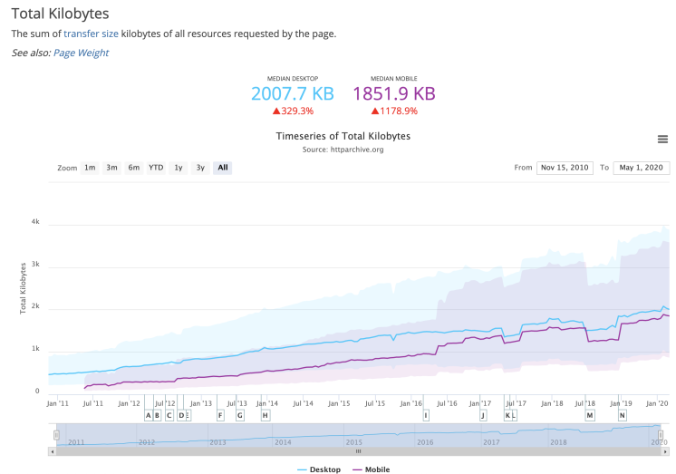

写在前面
性能-用户体验的重要因素
性能对于研发来说是一个经久不衰的话题，也是用户体验的重要因素。试想当你打开一个页面或者 APP 时，无论你是在寻找另你满意的商品，阅读高质量的新闻还是看有趣的短视频，都不会愿意等待。
用户可能有耐心排一两个小时的时间去排一个人气火锅店的排队，但却几乎没有人原因等哪怕 30s 去等待一个商品的加载。事实上对于大多 APP 或者网站来说，别说 30s，即使是 3s 也足以让大量的用户放弃等待转而去做别的事情。
Google 发现，如果页面加载时间超过 3 秒，53% 的移动网站访问活动将遭到抛弃。
网速变快了，网站却没有
有人可能会问，如今电脑和手机的性能都在飞快发展，性能优化是否还是那么重要？5G 时代即将来临，极速的网络是否已经足以帮我们解决性能问题？
其实，在 WEB 世界，广为人知的安迪-比尔定律仍然成立。
安迪比尔定律源于这句话：“Andy gives, Bill takes away.(安迪提供什么，比尔拿走什么)”
Andy 指的是 Intel 原 CEO 安迪·格鲁夫；Bill 则是微软的比尔·盖茨。这句话的意思是，英特尔公司总裁安迪·格罗夫一旦向市场推广了一种新型芯片产品，微软 CEO 比尔盖茨就会及时的升级自己的软件产品，吸收新型芯片的高性能。硬件提高的性能，很快被软件消耗掉了。
对于 WEB 世界来说，网络和终端设备的性能确实是在飞速发展。然而对应的，几十年来 WEB 技术也变得越来越复杂。在网络上传输的不再是一个简单的页面。WEB 技术本身在以更高的速度飞速发展，页面传输的体积、执行脚本的复杂度等都在不断增长。
根据 HTTP Archive 的数据，从 2010 年到 2020 年，桌面端和移动端的页面传输字节数（加载完成一个页面需要传输的数据量）逐年上涨，分别增加了 329% 和 1178%。

同时，随着网络基础建设不断更新换代，网络上媒体的传播形式也越来越丰富。例如近几年短视频兴起，很大程度上就是因为大多数用户的网络能够在可以接受的时间内加载出视频。
可以想象，随着未来网络状况的进一步改善，又会有新的媒体形式去填满增长出的网络传输能力。
只要安迪比尔定律没有失效，性能优化就仍然是经久不衰的话题。
性能优化的魅力
虽然前面从现实的角度出发解释了性能优化的重要性，但其实性能优化本身就具备无可比拟的魅力。
我们很多人都听过斯坦门茨画一条线一万美元的故事，有些人说这个故事反映了知识就是财富，有些人说这个故事反映细节决定成败。故事的真实性已经不可考，但是我个人非常喜欢这个故事。
斯坦门茨的故事：相传美国福特公司曾经有一台电机除了毛病，导致整个车间都不能运转。公司调来很多专家查看，就是找不到问题出在哪。于是请来著名的物理学家、电机专家斯坦门茨帮助，斯坦门茨在电机旁聚精会神地听了3天，然后又要了梯子，爬上爬下忙了多时。最后在电机的一个部位用粉笔划了一道线，写下了“这里的线圈多绕了16圈。”人们照搬了，就立刻排查了故障。 在月薪普遍 5 美元的当时，斯坦门茨要了一万元的账单，开了个账单：画一条线，1美元；知道在哪儿画线，9999美元
如果说工程师最大的快乐来自于创造，那我认为第二大的快乐就是来自于对精密系统的理解。从中可以领略前人解决问题设计方案的智慧，也能享受抽丝剥茧最后精准找到问题的成就感。
性能优化就是典型这样一个场景。我们要做的是理解复杂系统并从中找到性能问题的关键。有时我们甚至能根据问题的表现和对系统的理解，在没有直接观测到具体问题时就推测出真正的原因，就像海王星先通过数学推算、再被人们实际观测到的过程，充满了预言的魔力。
海王星的发现史：• 1821 年人们出版了天王星（不是海王星）的轨道表，但是观测标明轨道存在偏差，于是有人猜测是因为受到附近一个巨大天体的扰动
• 五年后，天文学家通过数学方法完成了对这颗未发现天体位置的推算
• 在随后的观测中，成功在推算的位置发现了这个天体，就是海王星
这本书会写什么
这本书会从不同的角度、结合具体的例子介绍针对于 WEB 场景（WEB 场景指 PC 站点、手机站点、APP 内部的 Hybrid 页面、React-native/WEEX 等 W3C 生态）性能的度量、分析和优化方法。
前三章会用真实的例子介绍我们面对性能问题的解决方案，性能的很多要素随着浏览器、网络协议的发展会改变，一些知识会失效。但度量、试验和分析的方法能够指导我们找到当下解决性能问题的方案。
后面的内容则是介绍针对不同场景的优化和当下有效的最佳实践，例如如何优化浏览器的渲染阻塞、如何优化图片、如何例如 CDN 进行优化等，也会用我们前面介绍的方法从中发现和验证优化方法。
性能优化的最小闭环
因为不同的优化方法总会随着技术的发展和变化而过时，我们希望读者不仅仅是把介绍的优化方法照搬过去，或者只是了解了很多最佳实践却难以提供给用户更好性能的页面。
为了让读者能够真正的运用这些方法和根据具体的场景解决新的性能问题，我们选择把这些优化方法的基础运用方法放在最前面，介绍要做完一个性能优化，要经过的最小的闭环路径，即：度量-分析-优化。
为什么度量很重要
难以复现的性能问题
A：有客户反馈这个页面打开特别慢，会白屏很久
B：在我电脑上挺快的啊
相比于可以稳定在多数环境下复现的功能问题，性能问题往往和环境、机器等相关，难以进行稳定的复现。于是这天就有了以上的对话。
这种特性导致了两个问题：
• 我们对于性能往往停留于一个主观的感受，无法判断一个页面性能究竟是好是坏
• 我们往往只能看到单个环境下的性能状况，对于不同环境下的性能表现无从判断
在这种情况下，我们很容易只是简单地对页面做一些优化，就草草了结这个问题，但实际上用户体验和品牌的仍然无法改善。
不度量性能，就无法优化性能
You can't manage what you can't measure.
一件事如果你无法衡量它、你就无法管理它。 --管理大师彼得德鲁克
要对一个页面进行真正有效的优化，而不只是让自己感觉似乎快了一些，首先我们要能合理的度量它。度量也存在非常多的手段，在前面《什么是 WEB 性能》中，我们也曾经提到过，我们可以从用户感知和技术指标来衡量具体的性能。

例如说当我们刷新一个页面时，我们可以在 Chrome 的 Devtools Network 面板看到 onload、DOMContentLoaded 时间等，这是一种度量方式。
我们也可以用一个录屏软件对一个网页的打开时间进行计时，计算从打开到用户看到主要内容的时间。借助一些工具，我们可以在单点对一个页面的性能进行度量，从而减少我们主观感受在其中的占比，给页面性能一个相对客观的评估。
用户视角度量
单点度量的方式优势在于便捷，信息充足。然而只能让我们看到一个特定的实验室环境下的性能表现，无法反映我们的用户感受到的性能状况究竟如何。
而我们的优化本质上是为了带来更好的用户体验，如果我们的用户普遍机器性能较差，而我们的优化完的页面只是在我们自己高端机器上健步如飞，那优化就没有意义。

所以，为了评估真是用户感受到的性能，我们还需要建立起以用户为中心的度量方式，通过把不同用户的性能在前端采集，上报和统计分析用户的整体性能。
接下来会分别介绍我们如何从前端采集、计算用户的性能。
用户视角性能上报
Performance API
想要能够在前端采集到页面的性能信息，浏览器提供了一些 API 辅助我们进行性能的测算和采集。这些 API 被称为 Performance API ，通常在 window.performance 这个对象下。
performance.now()
为了测算一个任务的耗时，我们常常用多次调用 Date.now() 的方式计算差值：
const startTime = Date.now();
// 做具体的任务 doTask()
// 最终耗时
const taskCostTime = Date.now() - startTime;
而这种方式存在两个问题：
• 在部分场景（例如游戏、benchmark 等）下的精度不够，只能精确到毫秒（ms）
• Date.now() 取的是时间戳（1970年到现在经过的秒数），依赖于客户端操作系统时间。如果用户记录了 startTime 然后修改了本地时间，就会出现任务耗时异常的情况（虽然这种情况理论上并不常见）
为了提供更高精度、更可靠的性能计时， Performance API 提供了 performance.now() 方法，具有以下特性：
• 精度精确到微秒（us）
• 获取的是相对当前页面打开的时间点，不依赖操作系统时间
需要注意的是，虽然 performance.now() 旨在提高更高精度的时间，但是由于 Spectre 漏洞的影响，现阶段主流浏览器都加入了一些精度上的扰动从而避免攻击。除此之外，Firefox 的一些隐私相关的设置可能也会影响相关的精度。
Spectre是一种依赖时间的针对具有预测执行能力CPU（例如Intel）的安全漏洞，允许恶意获取其他程序的内存内容。
兼容性
部分浏览器还没有支持 performance.now() ，在这种情况下我们可以使用 当前时间戳 - 页面打开的时间戳 进行模拟：
performance.now = function() {
// performance.timing.navagationStart 表示页面打开时的时间戳，非高精度时间
return Date.now() - performance.timing.navagationStart;
}
构建首屏指标
有了 performance.now() 后，我们就可以选取一个我们认为对于用户来说可以算作首屏的指标，并把相应的值采集上来。
例如我们在获取某个 API 的值后渲染了一个组件，我们认为这个时候可以被看做用户看到了想要看到的首屏，就可以记录这个点。
const res = await fetch(API);
const data = await res.json();
domContainer.innerHTML = data;
// 记录
record(performance.now());
于是，我们就可以从用户视角上报一个性能指标用于统计分析。